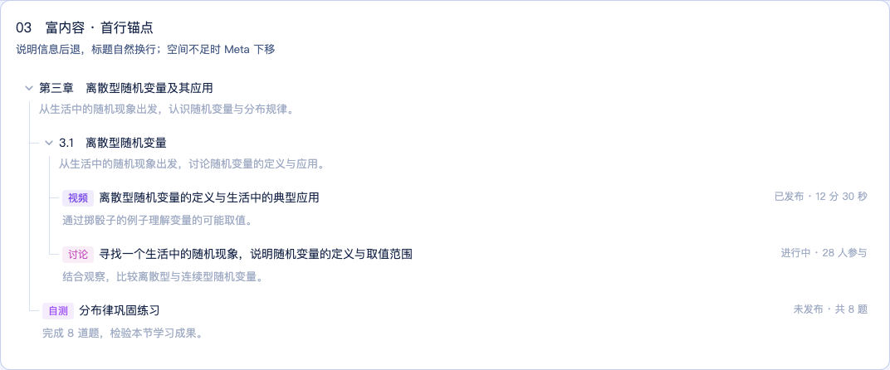
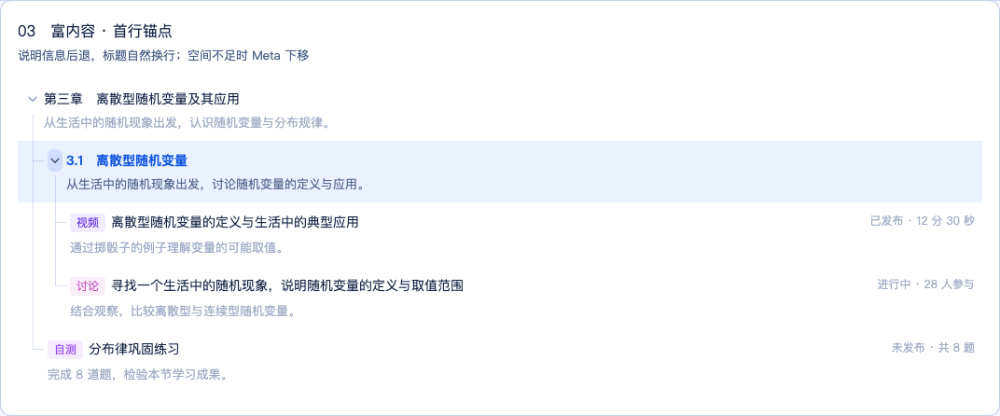
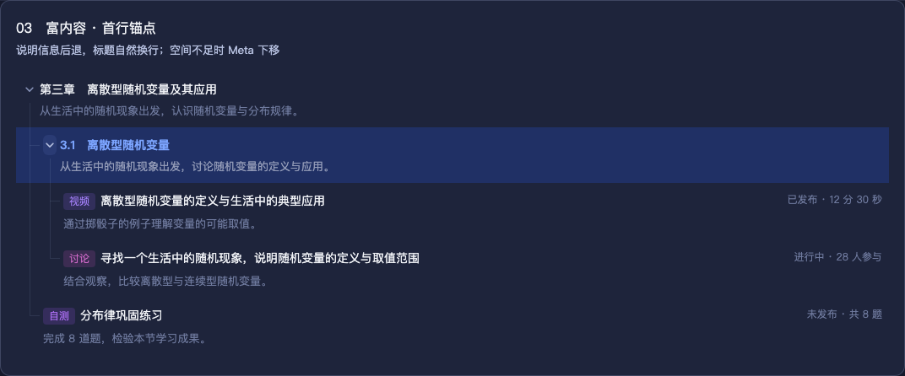
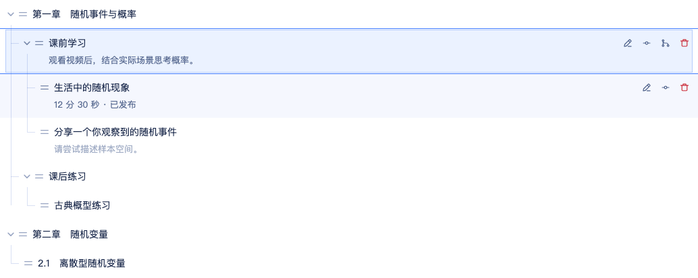
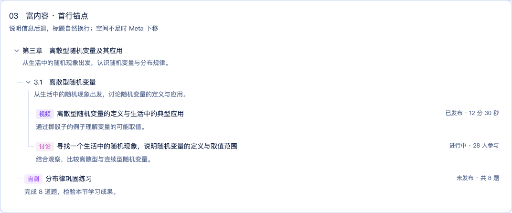
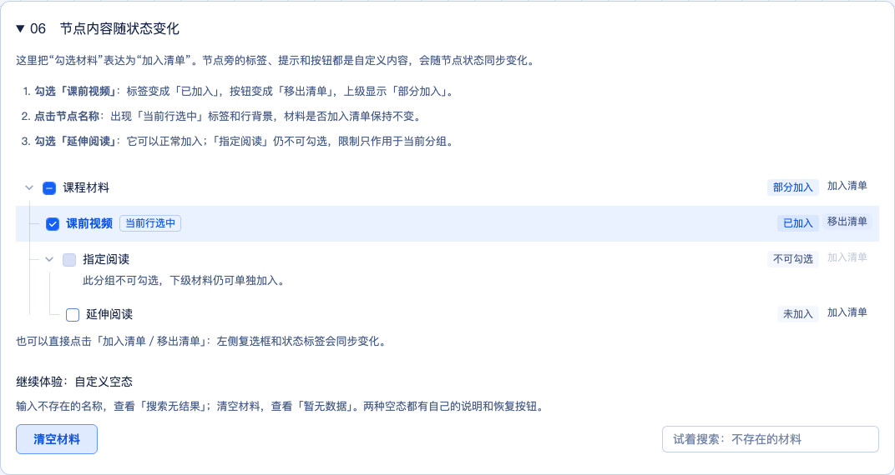
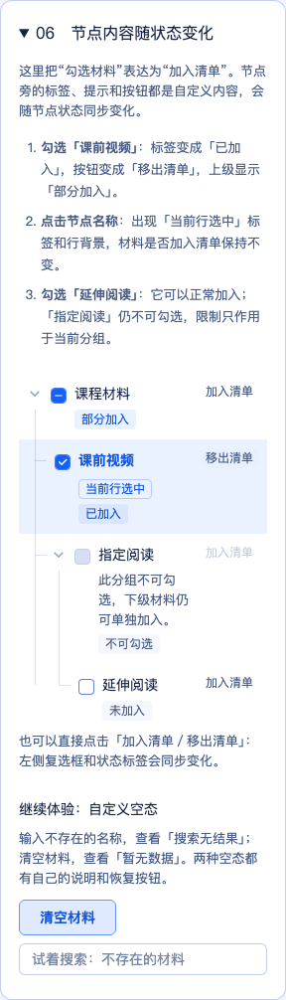
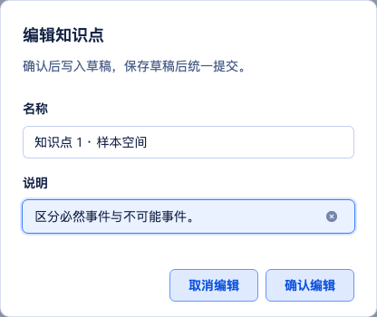
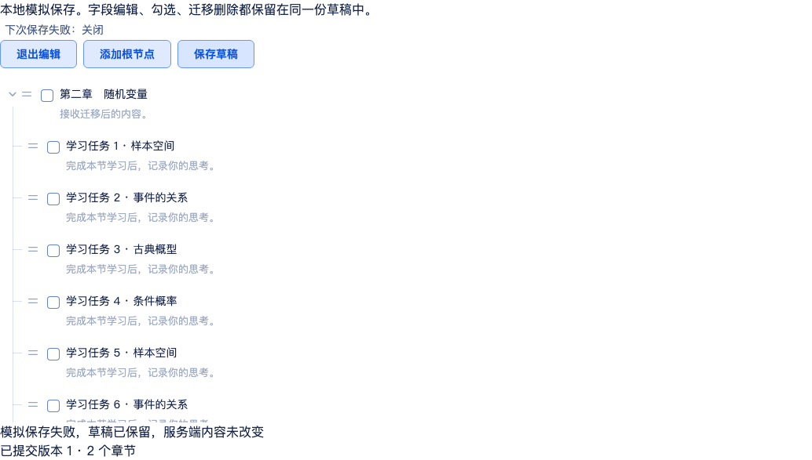
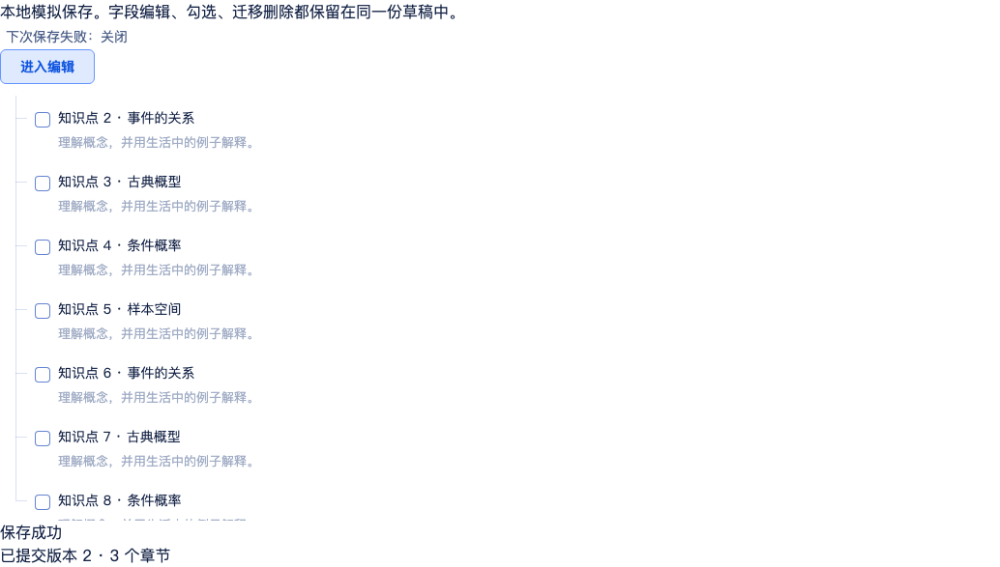

Web 高保真原型阶段：基础建设已完成。2026-09-29，当前 Tree 视觉已经人工检验通过，进入实际页面使用与按需维护。
2026-09-29：按你的反馈，默认保留当前浅色；两个后补示例已通过视觉验收。你确认的交互增强方案已落实到 Tree 与 ManageTree，下方是实际组件截图。
常态完全保持当前浅色。鼠标悬停、键盘聚焦或接收拖拽时，只增强该行的说明文字、辅助信息与操作图标；离开后恢复。关系线与排布始终沿用审核版。
增强时继续使用现有 Token：文字 Text/Neutral/4，箭头和手柄 Icon/Neutral/3，控件悬停／聚焦 Icon/Neutral/2。已写入共享样式；无须业务增加配置。
| 已测最低值 | 常态浅色 | 增强时浅色 | 增强时深色 |
|---|---|---|---|
| 说明／辅助文字 | 2.17:1 | 4.69:1 | 4.61:1 |
| 展开／拖拽图标 | 2.40:1 | 3.13:1 | 4.01:1 |
常态的低对比度限制仍然存在，此方案只改善交互时的阅读，不是完整对比度达标方案。





2026-09-29，你已确认“两个示例都通过”。此处保留审核证据。
三步说明与可见操作展示「勾选」「行选中」「当前节点受限」的区别。标签与按钮跟随真实状态变化，空态另有恢复入口。


业务可以进入弹窗编辑领域字段：确认后进入草稿，再统一保存；保存失败保留草稿。节点迁移删除按完整快照提交。



89 项专项单测、16 个生产浏览器场景、组件类型检查和页面构建通过。真实 Chrome 200% 缩放已检查。VoiceOver 实际播报未取得可核验结果，仍待人工检查；全库治理仍有其他任务的登记与历史边界问题。
当前视觉已人工验收，Tree 与配套 ManageTree 的 Web 原型基础建设完成。读屏、常态对比度和全库校验保留为后续事项。